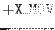
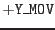

XMM-Newton Science Analysis System
movecalc (movecalc-1.5) [xmmsas_20170112_1337-16.0.0]
Description
movecalc and the related task iauephem
are intended to facilitate the spatial analysis of
observation data from moving objects such as comets or other solar system
bodies. In still sky images generated from aspect corrected
X/Y coordinates the spatial distribution of
events from these objects can be very complex and depends on the
projection of the object's track onto the image plane. This makes
spatial event selection very hard of even impossible in cases where the
object is too faint to clearly stand out against the X-ray background.
movecalc takes an event table with aspect corrected
X/Y coordinate columns (as generated by task attcalc)
and adds two new columns X_MOV/Y_MOV
(different names can be specified via parameters
xmovcol/ymovcol) containing the corresponding coordinates
in a reference frame that is centered on the moving object at all times.
This requires a second input table which defines the track of the object
as a function of time. The table is created with the task
iauephem and passed to movecalc via the parameter objtrack.
movecalc shall interpolate the object tracking data in time on an event
by event basis. This requires access to the event arrival times in
a column TIME by default.
The new X_MOV/Y_MOV coordinate system
is characterized by the following properties:
- The origin coincides with the center of the moving object at all times.
- The orientation is that of the underlying X/Y system,
i.e.
 points east-wards and
 to the
celestial North pole.
- Each coordinate pair defines a point in a plane that is tangent to
the celestial sphere (standard zenithal gnomic projection). The tangent
point is given by the center of the moving object at all times.
Please note: Geocentric parallax shifts are taken into account.
This refers to the fact that the apparent direction from the satellite
to the object does in general not coincide with its geocentric position vector.
The effect is the bigger the closer the object is.
Subsections
XMM-Newton SOC/SSC -- 2017-01-12